<nav>
  <div class="left-section">
    <div class="navbar-menu">
      <!--? Botón del menú hamburguesa -->
      <a class="btn btnHamburger" type="button" data-bs-toggle="offcanvas" data-bs-target="#offcanvasScrolling"
        aria-controls="offcanvasScrolling">
        <i class="iconNav hamburguesaIcon bi bi-list"></i>
      </a>

      <!--? Offcanvas para el menú -->
      <div class="offcanvas offcanvas-start" data-bs-scroll="true" data-bs-backdrop="false" tabindex="-1"
        id="offcanvasScrolling" aria-labelledby="offcanvasScrollingLabel">
        <div class="offcanvas-body">
          <!--? Botón para cerrar el offcanvas -->
          <button type="button" class="iconNav btn-close" data-bs-dismiss="offcanvas" aria-label="Close"></button>

          <!--? Sección del avatar y nombre -->
          <section class="navBarSectionAvatar">
            
            <p>¡Hola</p>
          </section>

          <!--? Sección de contenido del menú -->
          <section class="navBarSectionContenido">
            <div class="divNavBarSection">
              <h5 routerLink="/paginas/peliculas">Películas</h5>
              <h5 routerLink="/paginas/series">Series</h5>
              <h5 routerLink="/paginas/cartoons">Cartoons</h5>
              <h5 routerLink="/paginas/documentales">Documentales</h5>
            </div>
            <div class="divNavBarSectionOtros">
              <h5 routerLink="/paginas/Generos">Géneros<i class="iconNav bi bi-film"></i></h5>
              <h5 routerLink="/paginas/colecciones">Colecciones<i class="iconNav bi bi-collection-play-fill"></i>
              </h5>
            </div>
          </section>

          <!--? Sección de favoritos -->
          <section class="navBarSectionFavoritos">
            <i routerLink="/paginas/favoritos" class="iconNavStar bi bi-star-fill"></i>
          </section>

          <!--? Sección del perfil -->
          <section class="navBarSectionPerfil">
            <p routerLink="/paginas/perfil">
              Mi perfil <i class="iconNav bi bi-chevron-right"></i>
            </p>
            <p routerLink="/user/create">
              Crear perfil <i class="iconNav bi bi-plus"></i>
            </p>
            <p routerLink="/paginas/inicio">
              Cerrar sesión <i class="iconNav bi bi-chevron-left"></i>
            </p>
          </section>

          <!--? Sección de acerca de -->
          <section class="navBarSectionAcercade">
            <p url="https://github.com/dandrew97/CineBit_Fronted.git">
              Acerca de CineBit<i class="iconNavSection5 bi bi-info-circle-fill"></i>
            </p>
            <p url="https://github.com/StivenTorres17/CineBit-Backend.git">
              Contactanos
            </p>
            <p routerLink="/paginas/home" >CineBit<i routerLink="/paginas/home" class="iconNavSection5 bi bi-cc-circle"></i></p>
          </section>
        </div>
      </div>
    </div>
    <div class="divNav">
      <ul>
        <li>
          <i class="iconNav fa-solid fa-house"></i><a routerLink="/paginas/home">Home</a>
        </li>
        <li>
          <i class="iconNav fa-solid fa-ranking-star"></i><a routerLink="/paginas/top5">Top 5</a>
        </li>
        <li>
          <i class="iconNav bi bi-collection-play"></i><a routerLink="/paginas/colecciones">Colecciones</a>
        </li>
      </ul>
    </div>
  </div>
  <div class="middle-section">
    <a routerLink="/paginas/home">  </a>
  </div>
  <div class="right-section">
    <!--? Input de búsqueda -->
    <div class="input-wrapper">
      <label class="icon">
        <svg class="svg" xmlns="http://www.w3.org/2000/svg" fill="none" viewBox="0 0 24 24" height="25px" width="25px">
          <path stroke-linejoin="round" stroke-linecap="round" stroke-width="1.5" stroke="#f6f6f6"
            d="M11.5 21C16.7467 21 21 16.7467 21 11.5C21 6.25329 16.7467 2 11.5 2C6.25329 2 2 6.25329 2 11.5C2 16.7467 6.25329 21 11.5 21Z">
          </path>
          <path stroke-linejoin="round" stroke-linecap="round" stroke-width="1.5" stroke="#f6f6f6" d="M22 22L20 20"></path>
        </svg>
      </label>
      <input placeholder="Robocop.." class="input" name="text" type="text" />
    </div>
    <div href="favoritos" class="iconNav bi bi-star-fill"></div>
    
  </div>
</nav>


<!--? Botón del menú hamburguesa tablet -->
<div class="btnHamburgerTabletDiv">
  <a class="btn btnHamburgerTablet rounded-circle" type="button" data-bs-toggle="offcanvas" data-bs-target="#offcanvasScrolling"
  aria-controls="offcanvasScrolling">
  <i class="iconNav hamburguesaIcon bi bi-list"></i>
  </a>
</div>


<footer class="container containerFooterPhone text-center">
  <div class="divFooterPhone row">
    <div class="col">
      <i class="iconNavFooter fa-solid fa-house"></i> <!-- Icono de casa -->
    </div>
    <div class="col">
      <i class="iconNavFooter fa-solid fa-ranking-star"></i> <!-- Icono de estrella de clasificación -->
    </div>
    <div class="col">
      <i class="iconNavFooter bi bi-shuffle"></i> <!-- Icono de barajar -->
    </div>
    <div class="col">
      <div class="input-wrapper">
        <label class="icon">
          <svg xmlns="http://www.w3.org/2000/svg" fill="none" viewBox="0 0 24 24" height="20px" width="20px">
            <path stroke-linejoin="round" stroke-linecap="round" stroke-width="1.5" stroke="#f6f6f6"
              d="M11.5 21C16.7467 21 21 16.7467 21 11.5C21 6.25329 16.7467 2 11.5 2C6.25329 2 2 6.25329 2 11.5C2 16.7467 6.25329 21 11.5 21Z">
            </path>
            <path stroke-linejoin="round" stroke-linecap="round" stroke-width="1.5" stroke="#f6f6f6" d="M22 22L20 20"></path>
          </svg>
        </label>
        <input placeholder="Robocop.." class="input" name="text" type="text" /> <!-- Campo de entrada de texto -->
      </div>
    </div>
    <div class="col">
      <i routerLink="/paginas/favoritos" class="iconNavStarFooter bi bi-star-fill"></i> <!-- Icono de estrella rellena -->
    </div>
  </div>
</footer>
